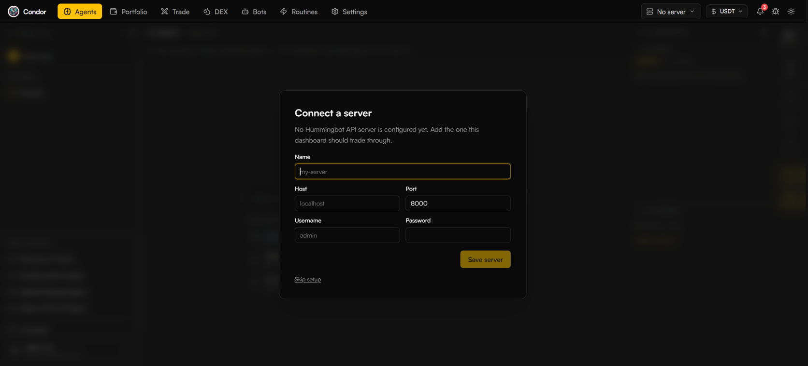
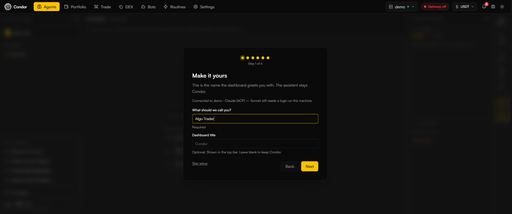
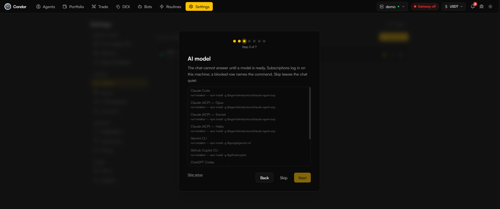
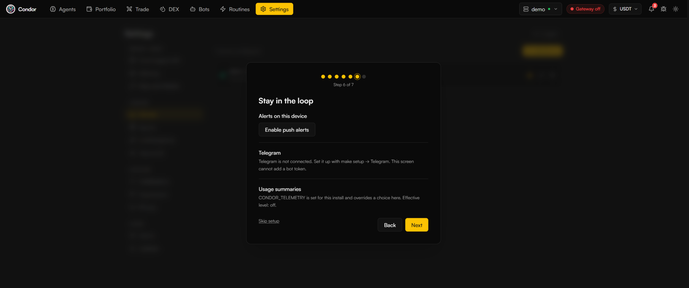

Guided first-run onboarding
Replace the blocking "Connect an Exchange or Wallet" overlay with a short, skippable setup that greets traders by name, confirms what make setup already configured, and leaves a gentle reminder instead of a wall. The look stays the same. Only the workflow changes.
Why
A new Condor install opens on a wall: a modal that blocks Portfolio, Trade, DEX and Bots until an API key exists. The first thing a trader learns is what they cannot do yet. A short guided setup flips that. It confirms what setup already did, asks only for what Condor needs, lets people skip what they are not ready for, and lands them in a dashboard that already feels like theirs.
- Setup, not a tour. The wizard collects settings (name, model, keys, look, alerts) and never explains the interface. This follows the Nielsen Norman Group guidance that onboarding fits apps that need user information to start, and that push tutorials interrupt people.
- Short and visible. Six steps with progress dots, every step except the name skippable.
- No dead end. Skipping leaves a one-line reminder on trading pages, not a modal.
Sources carried over from the first version of this proposal (not re-checked in this revision): NN/G: mobile app onboarding, NN/G: onboarding tutorials, Appcues: product adoption benchmarks, Userpilot: user onboarding, Pendo: Cin7, Growth Dives: Linear onboarding.
Before
On a fresh install, Portfolio, Trade, DEX and Bots show a modal that cannot be dismissed. Its only exit is a button to Settings, then API keys. It asks nothing about the trader: no name, model or theme.


After
A frosted six-step wizard. Name is required; everything else can be skipped. An install that already has keys, a wallet, a conversation or a bot is marked complete and never sees it. Run setup again lives in the avatar menu and in Settings, Appearance.
Before step 1: the server check
What a fresh install actually has (from setup-environment.sh and the Condor code at 97d9261; read, not yet run on a clean machine):
- A server named
localalmost always exists. The config template shipslocalatlocalhost:8000as the default server, owned by the admin. The name stayslocaleven when the API is remote or on Tailscale. - No default username. Nothing is
admin/admin. The template leaves username and password empty on purpose. - The user types the API username and password during
make setup(nothing is generated), and setup writes the same values intoconfig.ymland into the Hummingbot API's own.env. If a Hummingbot API is already installed beside Condor, setup reads its credentials and asks nothing. - Local and Telegram mode behave the same for the server; the mode only changes how the dashboard logs in.
- No server at all only happens with a hand-edited or deleted config. A skipped or failed API step leaves
localin place with empty credentials, so the dashboard sees an offline or rejected server, not a missing one. - The add-server call does not test the connection. It only rejects a duplicate name and saves. Offline servers stay in the list.
So the wizard's current first screen, the full "Connect a server" form below, is the rare case. It appeared in the review because the preview was set up by hand, not with make setup. A normal install would not see it.

local.Proposed behaviour
State of the local server | What the wizard shows |
|---|---|
| Online | Confirm only: "Connected to local · localhost:8000". No password asked. |
| Exists but offline | "Hummingbot API isn't responding yet", a Retry button, and host and port with an Edit link. Do not ask for credentials first. |
| Reachable but empty or rejected credentials | Ask only for username and password, save to the existing server, then re-check its status. |
| No servers | The full form (today's screen), pre-filled with local, localhost, 8000. |
Because saving never tests the connection, the wizard should save, then poll the server status and show the result. Telling "wrong password" from "unreachable" may need a small backend change (a test-connection call); that is not confirmed yet.
1. Make it yours

2. AI model

3. Connect where you trade

4. Look and units

5. Stay in the loop

6. You're set

After skipping: a reminder, not a wall

Rollout
| PR | Branch | Scope | Review status |
|---|---|---|---|
| #2 | ui/onboarding-shell | Wizard shell, server gate, name step, You're set, keys reminder; removes the overlay | Built, works |
| #9 | ui/onboarding-connect | Connect where you trade step | Built, works |
| #11 | ui/onboarding-model | AI model step | Works, tweak below |
| #12 | ui/onboarding-look | Look and units, Stay in the loop | Built, works |
Stacked PRs, merge in order. Frontend only; the API and routes are unchanged. This proposal and the side-rail proposal both touch AppShell.tsx: merge the rail first, then rebase onboarding.
Open points from review
- Model step (#11). When no agent tool is installed, the list is a wall of "not installed — npm install ..." lines. Consider showing the ready or recommended option first and folding the rest.
- Server check (before step 1). The current screen is a full form for the rare no-server case and ignores the
localserver that setup creates. Replace it with the four states in the table above. Open: whether a test-connection call is added on the backend, and how the wizard shows "starting" for a container that is still coming up. - Header noise. A red "Gateway" pill sits in the top bar behind the wizard on a fresh install. It is not actionable at that moment.
- Resume behaviour. After a reload the wizard reopens at the last step (6 of 6), which is useful, but the only way back to step 1 is Back five times.
Not checked yet: light theme and colour-blind mode inside the wizard, a real phone, and the wizard on an install that already has keys.
Decision requested
Approve the six-step wizard and the non-blocking reminder, shipped as PRs #2, #9, #11 and #12 into ui-redesign, subject to the open points above.
Refinement log
Newest first. Add a row for every change that comes out of review.
| Date | Change | Reason / source | PR |
|---|---|---|---|
| 2026-11-26 | Server check reworked: documented what a fresh make setup creates (local server, empty credentials the user fills in during setup) and proposed four states instead of one form | Refinement session; findings from setup-environment.sh and the Condor agent's read of the code. Not yet tested on a clean install | — |
| 2026-11-26 | Page rebuilt as editable HTML in docs/proposals/; screenshots retaken from the PR branches | Previous version was a generated page that could not be edited by every agent | docs |
| 2026-11-26 | Review notes added: model step list, server gate, header pill, resume behaviour | Review of PRs #2, #9, #11, #12 built on rn5 | — |